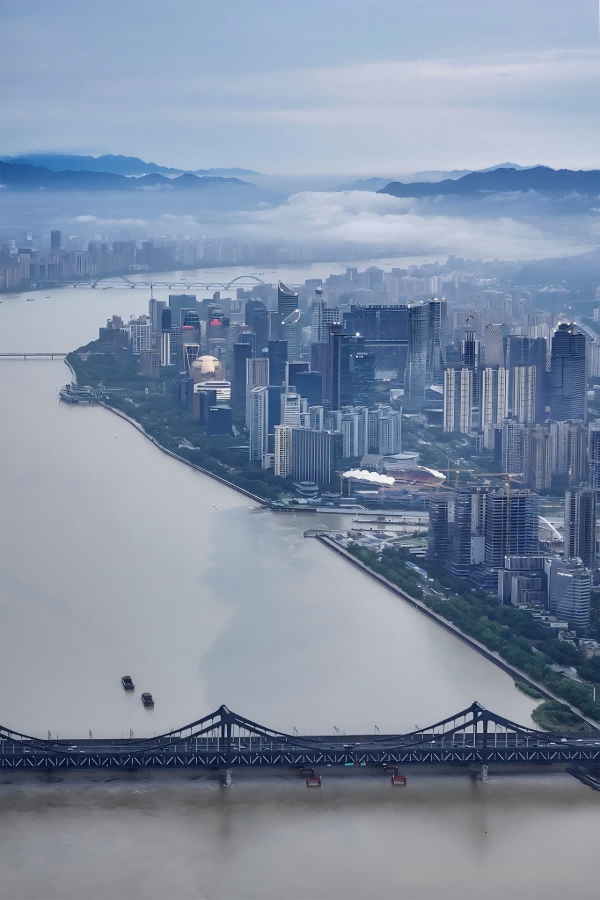
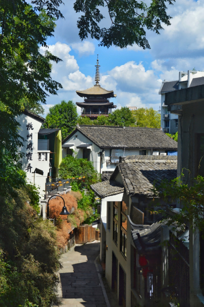
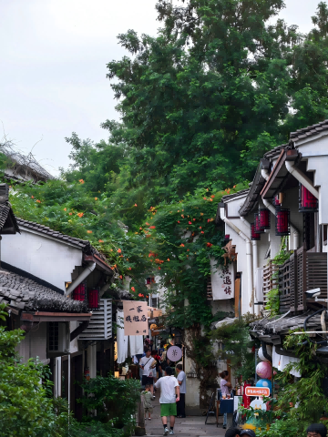
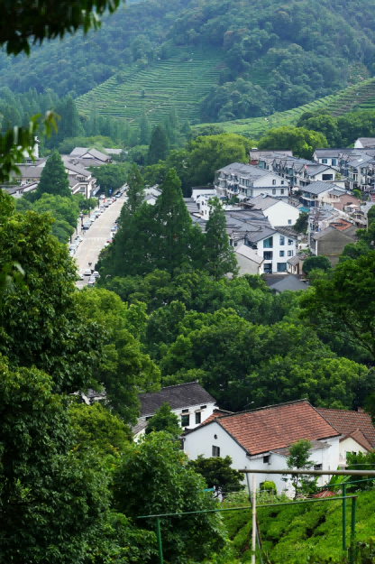

Best Neighborhoods to Stay in Hangzhou

Where you stay in Hangzhou defines your trip more than in most cities. Get it wrong — book near the train station because it looks “central” on a map — and you’ll spend half your trip in taxis wondering where the city actually is. Get it right, and you’ll walk out your door into what you came for: lake views, tea-scented mornings, or old lanes lit by lanterns at dusk.
Want to walk to West Lake? → Xihu District (lake views) or Shangcheng District (old streets, lake-adjacent, Hefang Street).
Want a real Chinese city, not a theme park? → Gongshu District, near the Grand Canal.
Prefer modern infrastructure, wide streets? → Binjiang District, across the river.
Here for tea, nature, silence? → Longjing or Meijiawu tea village guesthouse.
→ Full Hangzhou city guide for orientation
Xihu (West Lake) District
This is Hangzhou’s cultural core — more than a lake, it’s a ring of temples, pagodas, forested hills, and the city’s best restaurants and cafes. The northern and eastern shores put you walking distance from both the lake at sunrise and the hills in the afternoon. For a first-time visitor with 2–4 days, this is almost certainly where you want to be.
Where exactly: Look near Fengqi Road (凤起路) or Longxiangqiao (龙翔桥) metro stations. Both put you within a 10-minute walk of the lake and give you easy metro access to the rest of the city. Nanshan Road (南山路) on the eastern shore has higher-end hotels with lake views; the side streets behind it have quieter, more affordable options.
The trade-off: You’re paying for location. Hotels here can cost 30–50% more than equivalent rooms across the river. Weekends and holidays bring crowds right to your doorstep. And the restaurant scene near the lake skews toward tourists — walk 10 minutes inland for better food at lower prices.
Who it’s for
- First-time visitors who want to walk to West Lake
- Short stays (2–4 days) where every hour counts
- Travelers who want to bike the lake at sunrise without commuting
Shangcheng District (上城区)
Shangcheng is Hangzhou’s oldest urban core, stretching along the eastern shore of West Lake from Hubin (湖滨) southward through the historic lanes of Hefang Street (河坊街) and Southern Song Imperial Street (南宋御街). This is old Hangzhou at street level — narrow stone-paved alleys in the shadow of Wushan Hill, wet markets hiding behind Qing-dynasty facades, morning tai chi in small neighborhood parks. You walk out your door and within five minutes you’re either at the lake or in a 200-year-old lane lined with tea shops and dumpling stalls. It’s the best of both worlds: lake proximity and old-city texture.
Where exactly: Near 定安路 Ding’an Road or 龙翔桥 Longxiangqiao metro stations (Line 1). The area around Hefang Street offers boutique guesthouses in historic buildings; farther south near Wushan and the Phoenix Mosque (凤凰寺) are quieter residential lanes with more affordable options. The Hubin commercial strip at the northern end is the most modern and expensive corner.
The trade-off: The Hubin and Hefang Street area gets heavy foot traffic — it’s one of Hangzhou’s most touristed zones during peak hours. Hotel quality varies widely: some historic-building guesthouses are charming, others are just old. Stay a few blocks inland from the pedestrian strip for quieter mornings and better prices. And unlike Xihu District’s northern/eastern hotel clusters, Shangcheng is more spread out — you may need to walk 10–15 minutes to a metro entrance depending on where you book.
Who it’s for
- First-time visitors who want lake access plus old-city atmosphere in one neighborhood
- Travelers who love walking historic lanes, browsing street markets, and eating at small local spots
- Anyone staying 3–5 days who wants a central base for both the lake and the old city

Gongshu District
The old city center along the Grand Canal. Fewer tourists, more old Hangzhou — streets with plane trees, wet markets, noodle shops that have been open for decades. This is where you stay if you want to feel like you’re in a Chinese city rather than a Chinese theme park. Gongshu is Hangzhou’s answer to the question “but where do people actually live?”
Where exactly: Near Wulin Square (武林广场) for the most central access, or along the canal near Xiaohe Straight Street (小河直街) and Gongchen Bridge (拱底桥) for the atmospheric canal-side experience. The canal area north of Wulin is quieter, prettier at night, and has the best food street in the city (Shengli River Food Street).
The trade-off: You’re about 15–20 minutes from West Lake by metro or taxi. The area around Wulin Square is more commercial and less atmospheric than the canal lanes. And international-brand hotels are scarcer here — you’ll find more Chinese chain hotels and independent guesthouses.
Who it’s for
- Return visitors who’ve already “done” West Lake
- Travelers who prioritize food and local atmosphere over tourist proximity
- Longer stays (4+ days) where you want to settle into a neighborhood

Binjiang District
Across the Qiantang River from downtown. New, clean, full of Alibaba offices and startup workers. The riverfront promenade at night is stunning — the downtown skyline reflected in the water. Less character than the old city, but wider streets, better infrastructure, and some of the best-value business hotels in the city. If you’ve been traveling through China for a while and want a break from the intensity of old-city neighborhoods, Binjiang feels like a reset.
Where exactly: Near Jiangling Road (江陵路) or Binhe Road (滨和路) metro stations on Line 1. The riverfront area around the “Big Lotus” Olympic Sports Center has the best views and walking paths. The area near Alibaba’s Binjiang campus has good cafes and restaurants catering to the tech crowd.
The trade-off: You’re on the wrong side of the river for everything tourist-facing. West Lake is about 25–35 minutes by metro. The area lacks the old-city character that makes Hangzhou special — it could be any modern Chinese business district. And after 10 PM, the streets get quiet.
Who it’s for
- Business travelers with meetings in Binjiang
- Travelers who prioritize hotel quality and modern infrastructure over atmosphere
- People who’ve been to Hangzhou before and want to see a different side of the city
Longjing / Meijiawu
For a completely different experience: stay at a guesthouse in the tea hills. You wake up to mist and birdsong instead of traffic. The air smells like tea leaves and earth. Your morning walk is through terraced fields where farmers are already out picking leaves. This is the Hangzhou of Chinese poetry, not Chinese tourism.
Where exactly: Meijiawu (梅家坞) has more guesthouse options and better restaurants — it’s the larger and more accessible of the two. Longjing Village (龙井村) is smaller, higher up, and feels more remote. Both are about 20–25 minutes by taxi from downtown. There’s no metro — you’re relying on DiDi or a rental car.
The trade-off: You’re about 25 minutes from the city. There’s no nightlife, delivery apps are limited here, and if you forget something at the convenience store you’re taking a roughly ¥40 taxi to get it. Dinner options are limited to the guesthouse restaurant and maybe one or two local places that close by 8 PM. This is a choice for people who want to wake up in nature — not people who want to go out at night.
Who it’s for
- Couples and solo travelers seeking a quiet, nature-focused stay
- Photographers who want dawn mist-over-tea-fields shots
- Anyone who’s heard “Hangzhou is beautiful” and wants the full immersion

Where NOT to Stay
Also avoid: the far edges of Yuhang District and Xiaoshan District. They’re administratively “in Hangzhou” but functionally in different cities — 45+ minute commutes to anything you’d want to see.
Side-by-Side Comparison
| Neighborhood | Best for | Price | To West Lake | Nightlife | Character |
|---|---|---|---|---|---|
| Xihu District | First-timers | ¥¥¥ | Walk | Moderate | Tourist-facing but beautiful |
| Shangcheng | Old streets + lake | ¥¥ | Walk | Good — Hefang Street, Hubin | Historic lanes, local texture |
| Gongshu | Local life | ¥¥ | 15–20 min metro | Good — canal-side bars, food streets | Old Hangzhou, real and lived-in |
| Binjiang | Modern comfort | ¥¥ | 25–35 min metro | Quiet after 10 PM | New, clean, anonymous |
| Tea Villages | Nature escape | ¥¥ | 25 min taxi | None | Poetic, immersive, remote |
Price: ¥ = budget (under ¥300/night), ¥¥ = mid-range (¥300–800), ¥¥¥ = premium (¥800+)
🏨 Found your neighborhood?
Next: plan your days with the full 3-day Hangzhou itinerary — what to do, where to eat, and how to time everything.
3-Day Hangzhou Itinerary →📋 Landing in China? Get the free arrival checklist
Alipay setup, VPN, eSIM, and the exact steps for your first 48 hours — all in one place.
Send Me the Checklist →